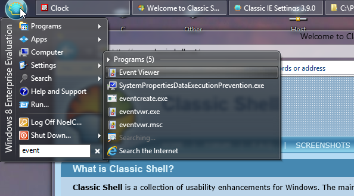
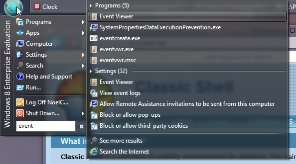

Thanks for inviting me into the beta testing, Gaurav and Ivo.
Initial report,
Windows 8 Enterprise system with Aero Glass for Win8 installed:
1. The install appeared to go fine, from what I can see. The only unexpected thing was that the installer let me know Internet Explorer was still running (I had just closed it, so I guess the process was hanging around), then it offered to close it for me. It ran the rest of the way through without any errors and popped up the Readme info just as expected. I saw this in the Windows Application Log afterward, though ClassicShell indeed did restart. Perhaps this is expected during an upgrade:
http://Noel.ProDigitalSoftware.com/ForumPosts/CS39AppLog.png 2. I reconfigured ClassicShell to use the Smoked Glass skin, and turned on the Enable Aero Glass setting. It looks and works great!
http://Noel.ProDigitalSoftware.com/ForumPosts/ClassicShell39OnWin8.png3. The only thing that I'm not sure I like so far is the appearance of extra search items after the initial list is presented. The first time I searched from the box it added to the list and moved everything just at the moment I clicked, which caused me to start a different application than the one I was looking to run. My first impression is that I want to turn that off - the data that pops up immediately is all I want to see.
Visual example: When one types in "event", this is initially shown:

Then after a second or two, the following shows:

I looked over the options and don't see how to limit the operation to just the first (immediate) list above, which is I assume the way the old ClassicShell used to work. Can you advise?
If I didn't miss a setting, you should really think about making the menu updating behavior optional. Things that unexpectedly change out from under a mouse about to be clicked are frustrating and potentially dangerous.
-Noel


{kind=link}
{kind=link}
{kind=link}